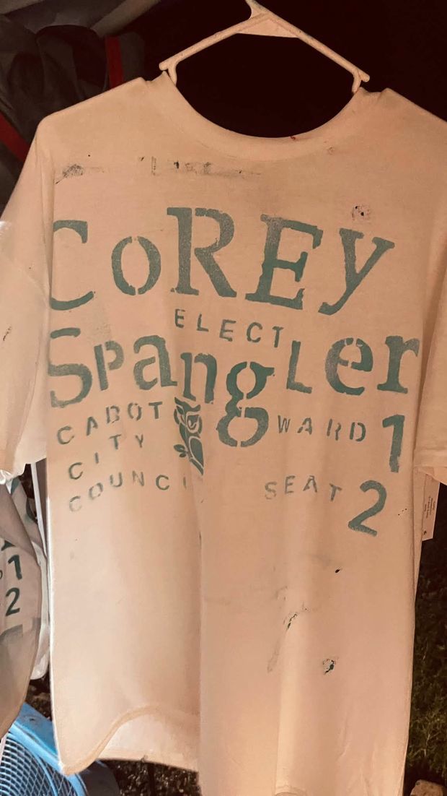

Positions
The questions people actually want answers to, answered plainly. Everything below is city-council business: what I have done, what I have sponsored, and where I stand. If it binds spending, it's an ordinance. If it's just talk, I'll say so.
The basics
What's your platform in one line? Fiscal responsibility. Local control. Privacy. That's not a slogan I tested. It's the filter I run every vote through: Does this spend taxpayer money wisely? Was this decision made here, by people who answer to Cabot? And does it respect people's privacy?
How do you actually work on the council? Ordinances over resolutions. A resolution is a statement; an ordinance binds the spending. If we mean it, we should pass it in a form that holds. I sit on the Budget and Personnel Committee, and I have completed all three years of UCA's Community Development Institute. I don't just show up and vibe-legislate every other Monday; I put in the hours to understand municipal law, economic development, and institutional strategy.
Flock cameras and license-plate readers
The cameras are off. I introduced an ordinance — now Ordinance No. 33 of 2026, pending its third reading on November 16, 2026 — to prohibit city money, including sales tax revenue, turnback funds, grants, and asset forfeitures, from purchasing, leasing, operating, or licensing third-party license-plate reader systems. Existing contracts are honored to expiration. No renewals, no extensions, no expansions.
First, undo the third-party system. I am not for a city-run system as the plan. Any in-house system would be a separate, later decision — made in public, under public oversight, only if the community decides it wants one.
Writing endless subscription checks to private, out-of-state tech corporations that harvest location data on law-abiding citizens is neither fiscally responsible nor aligned with our values.
If any plate-reader use were ever authorized through that separate public process, the guardrails I have articulated are: automatic 30-day purge of non-evidentiary scans; bans on facial recognition, predictive policing, biometric identification, and wireless device tracking; data sharing only under a council-approved agreement with a case number attached; monthly statistical reporting in the council packet; and criminal penalties for misuse. The point is simple: no open-ended database of where law-abiding people drive.
AI and conscience
I wrote Ordinance No. 21 of 2026, adopted unanimously on August 17, 2026. No city employee can be compelled, as a condition of employment, to use generative or agentic AI when it conflicts with their sincerely held religious beliefs. The employee files a written First Amendment Technological Accommodation request with HR, the city provides another way to get the work done, and performance and quality standards stay the same. Assistive tech — spellcheck, calculators, search — is explicitly not covered. This is about conscience, not about opting out of doing the job. As far as anyone has been able to find, it is the first AI religious exemption law of its kind.
Data centers and crypto mines
I fought the crypto mine built in Cabot's planning district and sponsored the February 2025 council fix — Ordinances 8, 9, and 10 of 2025. My drafted data-center ordinance (a draft — never introduced as a standalone ordinance) is built the same way: size-tiered zoning with conditional-use review for big facilities; noise limits of 55 dBA daytime / 45 dBA nighttime at residential property lines; closed-loop cooling so facilities don't strain city water; a developer-funded grid-capacity study; a cap on how much remaining substation capacity one facility can take unless the developer funds the upgrades; and $1,000/day fines. Plain version: big power users pay their own way. Set the rules before the vendors set them for us.
Accountability and transparency
Livestreaming. When the city turned off comments on virtual meetings, I fought to keep government open. The record, stated accurately: I co-sponsored Resolution No. 49 of 2024, which formally authorizes livestreaming of city council meetings with guidelines, passed unanimously (8–0) on October 21, 2024.
Show your work. I publish my drafts, bills, and position papers in a public legislative portfolio, and I publish my full extracted voting record, lone dissents included — see The Record.
Water bills. A bill you can't explain is a bill you can't defend. My Ordinance No. 16 of 2026 would have the Water and Wastewater Commission send every customer a December sample bill projecting next year's rates and listing every recurring fee. It was tabled April 20, 2026, on my own motion, and I continue to work with the Commission on a public transparency process.
Slow down rushed votes. Items should sit until a subsequent meeting so the public gets input before a vote. My §5 agenda rule, adopted in Ordinance No. 2 of 2025, builds that pause into the council's own rules: work-session committee items land on a Regular Session agenda on a subsequent date; same-date consideration only by majority vote. Speed is not a virtue when it's the public's money.
Money in politics. My mechanism is §601.4 of the Democratic Party of Lonoke County Bylaws, adopted January 23, 2026: the committee designates entities "grossly misaligned" with the platform, and the committee, its auxiliaries, and its candidates and nominees may not take money from designated entities; the list is public; refunds are due in 30 days. As far as can be found, the first Democratic county committee to institute this rule. Four people, a quorum, and a vote. That's how binding change actually happens — not with a press release, with a bylaw. In my own campaigns I practice the same rule: I make my own signs and shirts and give them away. You need something to say, not money.

Local control
Decisions about Cabot should be made in Cabot, by people who answer to Cabot. The state has been taking tools away from cities. After Cabot acted on the crypto mine in its planning district, the legislature repealed cities' planning-district authority statewide — Act 314 of 2025. The state senator who had urged the council to pass the local fix in December 2024 then voted for the repeal. That sequence is exactly why I believe in local control: if a rule is worth passing here, it shouldn't be erased in Little Rock.
Law enforcement
No. I'm not anti-police. I'm pro-public safety, anti-mass surveillance. Police should have real tools for real investigations. What I oppose is a third-party corporation building a movement database of every law-abiding driver in town. A camera watching a park is a different thing from a vendor-owned network tracking everyone's plates.
I support funding, equipment, and training for the Cabot Police Department, with the city accountable and civil liberties protected, and I am a graduate of the Cabot Citizens' Police Academy. Supporting the police and refusing to farm out surveillance of everyone else to a vendor are the same position: real tools for real investigations.
Local growth
Grow Cabot without hollowing out the people who built it. My test for any deal: Does it pay its way? Does it serve the people who live here now? Can I show you the numbers?
State law is on the residents' side here: under Ark. Code § 14-56-103, new developments must pay their fair share of infrastructure impact. And sequencing matters — no final plat, no utility hookups, until the engineering data proves the water, sewer, and road grids can handle the load. I favor steering incentives toward small local businesses over big-box stores and chains:
We have a profound responsibility to protect small businesses from being squeezed out by creeping corporate consolidation.
Growth that only works if the locals lose isn't growth. It's replacement.